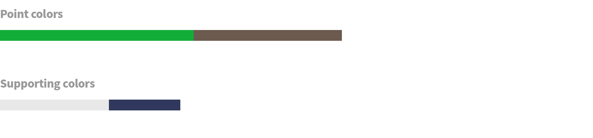
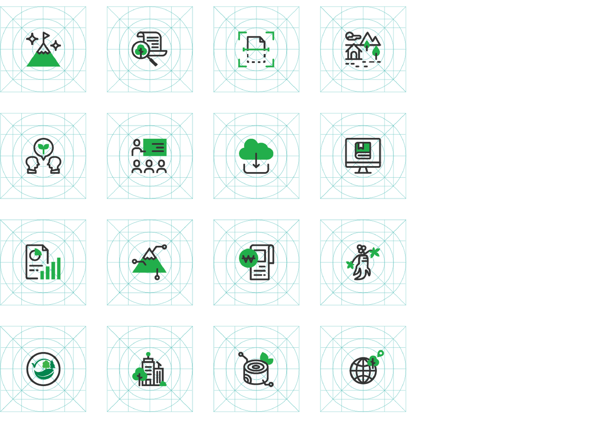
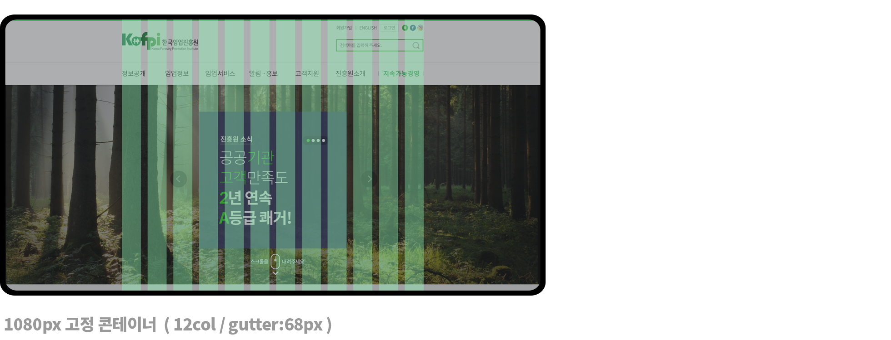
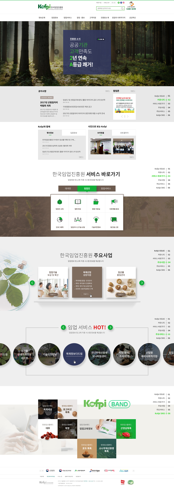
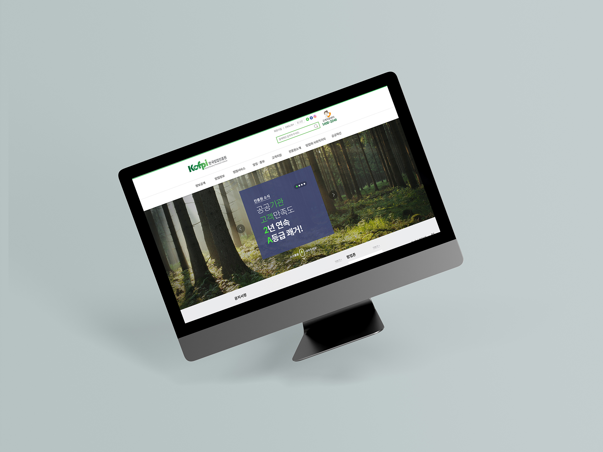
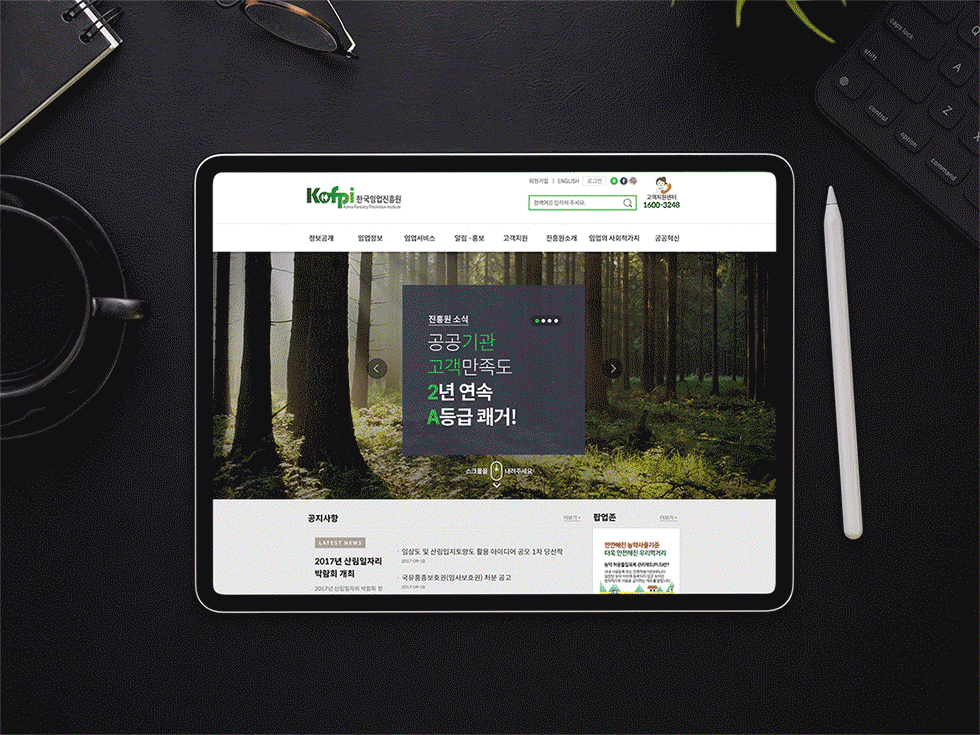

overview
임업이 생소한 대국민, 더 쉽고 효율적으로 유용한 임업 정보를 얻고 싶은 임업인 등 각 사용자들의 요구에 맞게 맞춤형 임업 서비스를 제공할 수 있는 사이트를 구성을 목표로 하였다. 임업의 각종 서비스와 시스템을 사용자의 특성에 맞게 그룹핑하고, 흥미를 유발하는 아이콘을 사용한 맞춤형 정보를 제공한다. 인포그래픽을 이용하거나 그래픽 디자인을 통하여 보다 더 직관적으로 이해할 수 있도록 표현.-
MY ROLE
메인 UI 및 아이콘 작업 -
DATE
2018.12.01 ~ 2019.01.31 -
TYPE
데스크탑 웹, 다국어
-
CONCEPT
기존 한국임업진흥원 포털 사이트의 디자인 시스템을 기반으로 트렌디한 색상과 엘리먼트를 구성하여, 아이덴티티를 확립하고 통일성 있는 메뉴구조도와 UI 구축으로 혼란없는 사용자경험 제공할 수 있도록 고객의 니즈를 충족 -
기존 스타일트렌드아이덴티티
-
COLOR PALLETTE
TYPOGRAPHY
 • 다양한 weight, 다국어를 지원하고, 저작권에 문제가 없는 오픈소스 글꼴 중 최대규모인 Noto Sans CJK 를 시스템 폰트로 지정.
• 다양한 weight, 다국어를 지원하고, 저작권에 문제가 없는 오픈소스 글꼴 중 최대규모인 Noto Sans CJK 를 시스템 폰트로 지정.
• 산세리프 서체의 현대적이고 균형잡힌 느낌을 통해 저작권의 문제가 없고, 올드한 이미지를 벗어나고자 했던 고객의 니즈 충족.ICONGRAPHY
 • 라인 형태에 포인트 컬러만 적용한 심플하면서도 직관적인 아이콘 구성.
• 포인트 컬러는 기존 green 컬러보다 밝은 네온컬러 스타일로 변경.GRID SYSTEM
 • 주 연령대가 높은 이용자 및 공공기관 내에서 아직 사용중인 구형 모니터와, 태블릿에서도 탐색 가능한 웹사이트를 구현하길 원했던
고객의 니즈충족을 위하여, 1080px의 고정 콘테이너를 콘텐츠 영역으로 구성하여 대응하였다.


